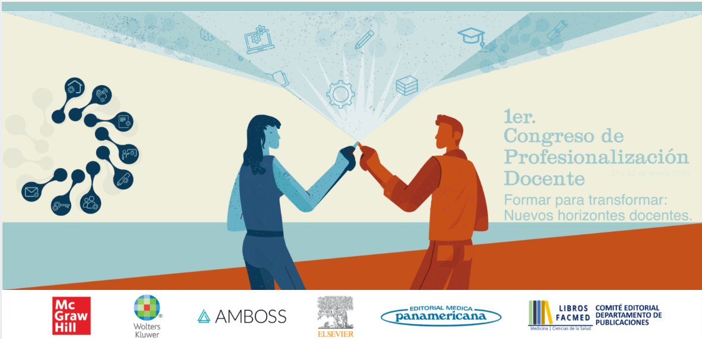
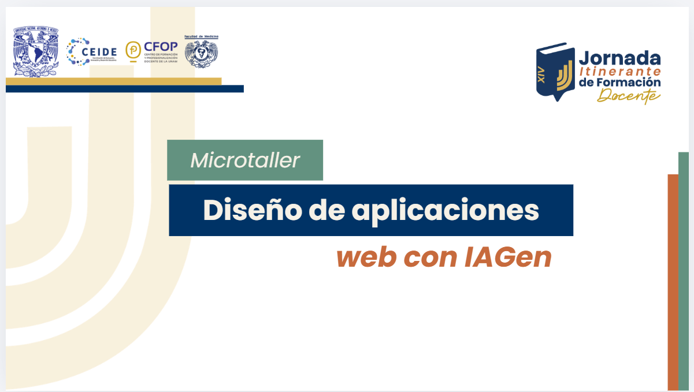
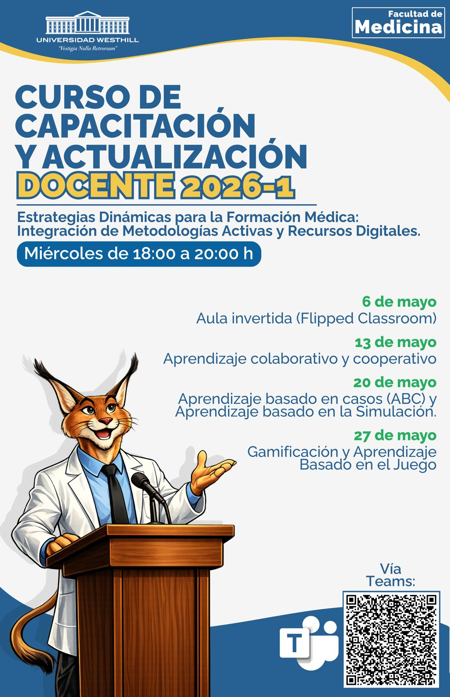
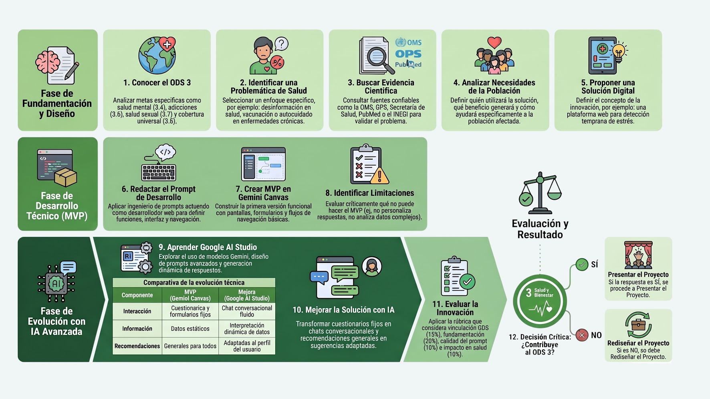
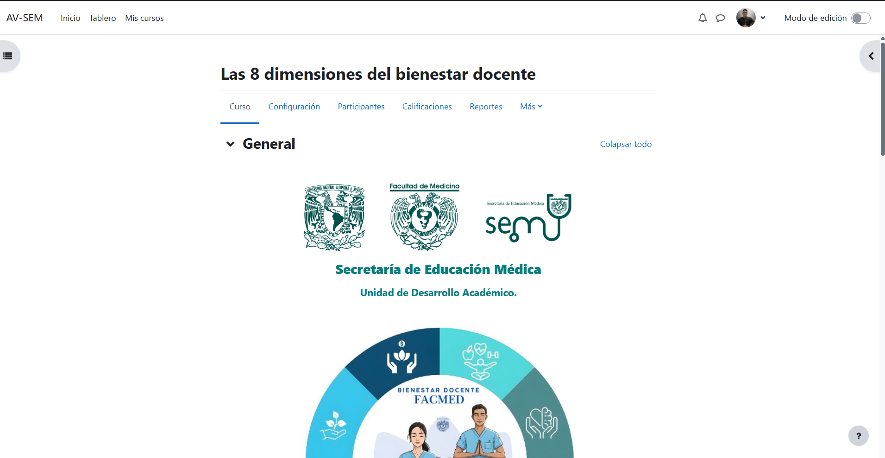
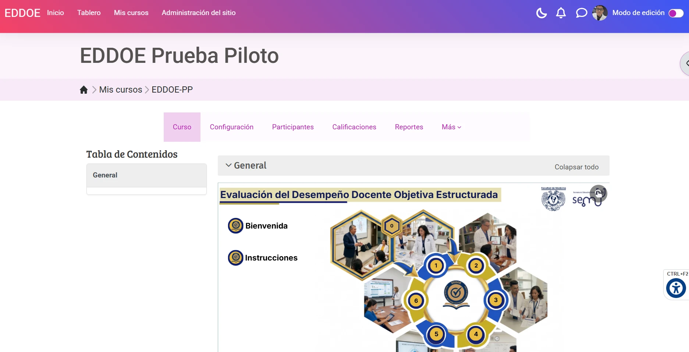

EXPEDIENTE PORTAFOLIO ACADÉMICO ÁREA TECNOLOGÍA EDUCATIVA SEDE CIUDAD DE MÉXICO
Jahaziel Quintín Cruz García
Médico por la UNAM especializado en tecnología educativa, diseño instruccional e IA aplicada al aprendizaje. Diseño, lanzo y evalúo programas de aprendizaje digital con resultados medibles.
-
10+
Años en educación médica
-
35
Actividades académicas
-
570+
Horas de formación impartidas
-
330
Personas capacitadas
Historial académico
Actividades académicas
Cada expediente documenta el ciclo completo: planeación, difusión, implementación, recursos producidos y evaluación.
-

-

-

-
-

-

-
